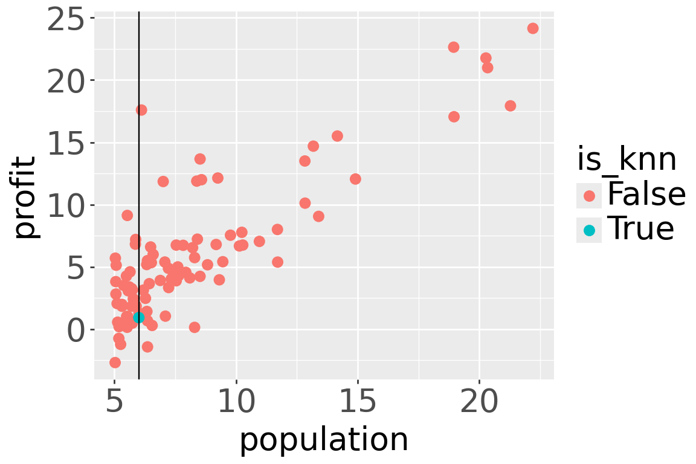
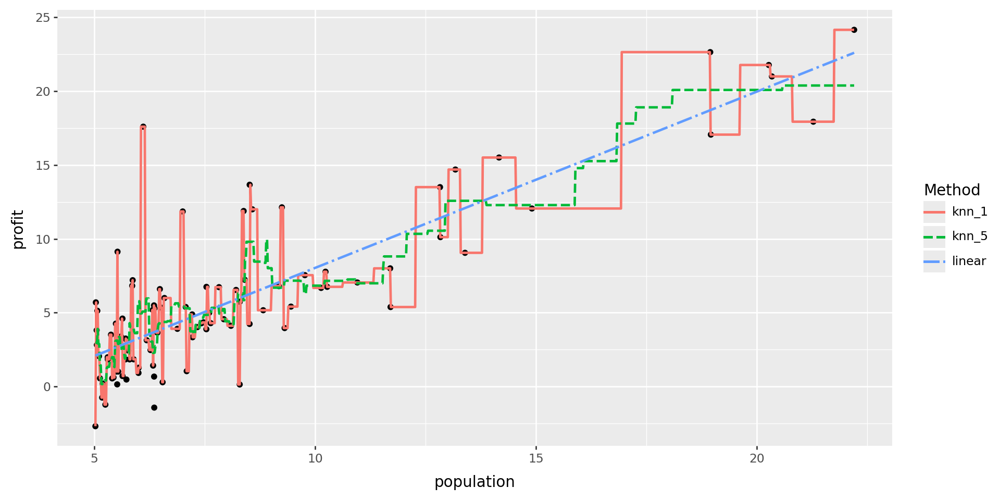
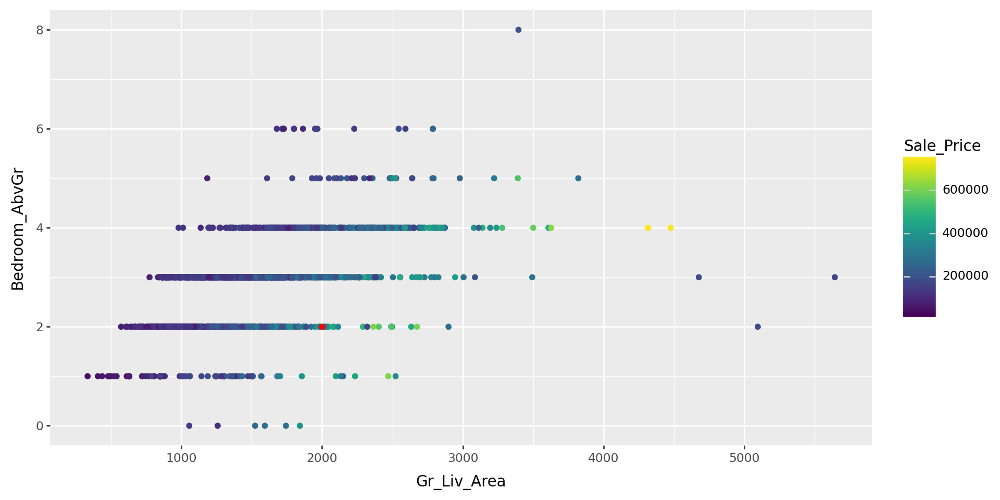
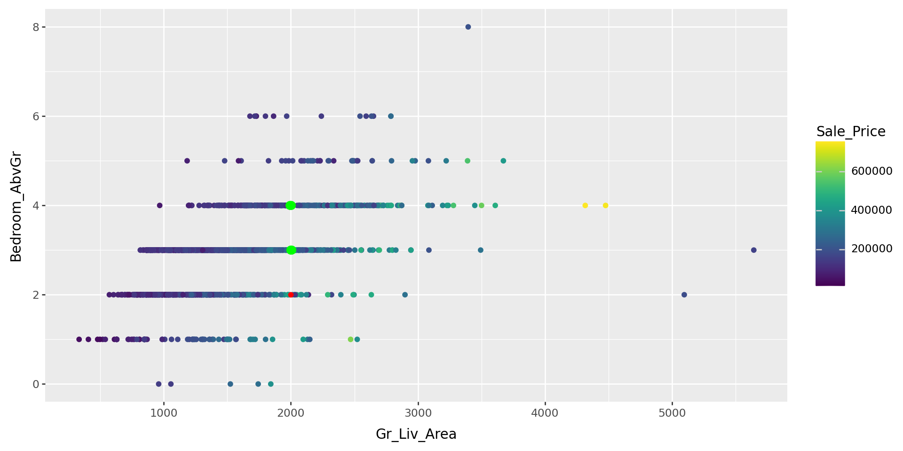
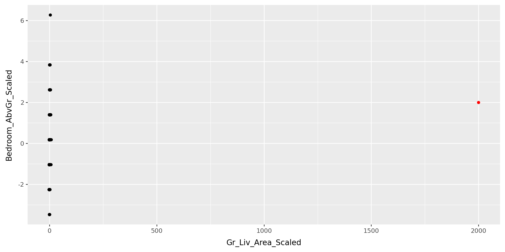
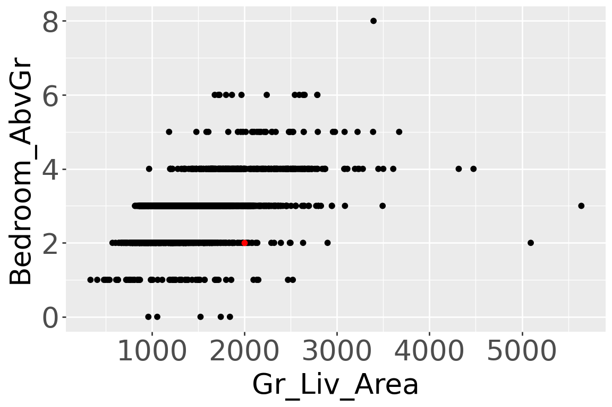

Math 4025: KNN
Dr. Eric Friedlander
K-Nearest Neighbors
Regression: Conditional Averaging
Restaurant Outlets Profit dataset
What is a good value of \(\hat{f}(x)\) (expected profit), say at \(x=6\)?
A possible choice is the average of the observed responses at \(x=6\). But we may not observe responses for certain \(x\) values.
K-Nearest Neighbors (KNN) Regression
- Non-parametric approach
- Formally: Given a value for \(K\) and a test data point \(x_0\), \[\hat{f}(x_0)=\dfrac{1}{K} \sum_{x_i \in \mathcal{N}_0} y_i=\text{Average} \ \left(y_i \ \text{for all} \ i:\ x_i \in \mathcal{N}_0\right) \] where \(\mathcal{N}_0\) is the set of the \(K\) training observations closest to \(x_0\).
- Informally, average together the \(K\) “closest” observations in your training set
- “Closeness”: usually use the Euclidean metric to measure distance
- Euclidean distance between \(\mathbf{X}_i=(x_{i1}, x_{i2}, \ldots, x_{ip})\) and \(\mathbf{x}_j=(x_{j1}, x_{j2}, \ldots, x_{jp})\): \[||\mathbf{x}_i-\mathbf{x}_j||_2 = \sqrt{(x_{i1}-x_{j1})^2 + (x_{i2}-x_{j2})^2 + \ldots + (x_{ip}-x_{jp })^2}\]
KNN Regression (single predictor): Fit
\(K=1\)
1-NN prediction at x=6: 0.9270
\(K=5\)
5-NN prediction at x=6: 5.7699Regression Methods: Comparison

Question!!!
As \(K\) in KNN regression increases:
- the flexibility of the fit (decreases /increases)
- the bias of the fit (decreases/increases )
- the variance of the fit (decreases/increases)
K-Nearest Neighbors Regression (multiple predictors)
- Let’s look at the
amesdata
| Loading ITables v2.6.2 from the internet... (need help?) |
- Should 1 square foot count the same as 1 bedroom?
- Need to center and scale (freq. just say scale)
- subtract mean from each predictor
- divide by standard deviation of each predictor
- compares apples-to-apples
Why center and scale
New observation

- Where do you think the 10 nearest neighbors should be?
Computing Distances
Practice!
10 “Nearest Neighbors”

- Are they where you thought they should be?
Visualizing Centering and Scaling in 1-D
Practice!
- Visualize our original data
- Visualize our orginal and centered data, side-by-side
- Visualize our original and scaled data, side-by-side
Visualizing Centering and Scaling: 2D
Practice!
Let’s do that same thing with two variables.
Dealing with new data
New Observation
Code

- Where should we put this point on the normalized plot?
Plotting new observation without normalizing
Code

- Does this look right?
Normalized using training data
Original Data
Scaled data
Code
# Manually scaling using training means/stds
new_house_scaled = new_house.copy()
new_house_scaled["Gr_Liv_Area_Scaled"] = (new_house["Gr_Liv_Area"] - ames_train["Gr_Liv_Area"].mean())/ames_train["Gr_Liv_Area"].std()
new_house_scaled["Bedroom_AbvGr_Scaled"] = (new_house["Bedroom_AbvGr"] - ames_train["Bedroom_AbvGr"].mean()) / ames_train["Bedroom_AbvGr"].std()
(ggplot(ames_train_scaled, aes(x = "Gr_Liv_Area_Scaled", y = "Bedroom_AbvGr_Scaled")) +
geom_point() +
geom_point(data = new_house_scaled, color = "red")+
theme(text = element_text(size = 20), figure_size=(6, 4)))
Compute new distances
Practice!
Scaled distances look better
| Loading ITables v2.6.2 from the internet... (need help?) |
Which plot looks better
Original distances
Scaled distances
Recap
K-Nearest Neighbors
- Non-parametric: No assumptions about the functional form of \(f(X)\)
- Regression: Average of the \(K\) nearest neighbors
- Distance: Usually Euclidean distance
- Scaling: Crucial when predictors are on different scales!